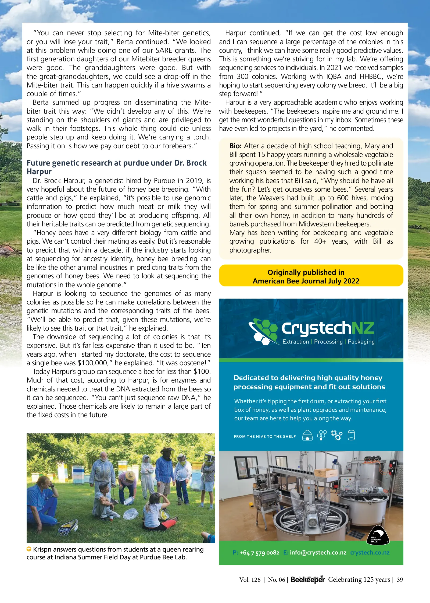

“You can never stop selecting for Mite-biter genetics,
or you will lose your trait,” Berta continued. “We looked
at this problem while doing one of our SARE grants. The
first generation daughters of our Mitebiter breeder queens
were good. The granddaughters were good. But with
the great-granddaughters, we could see a drop-off in the
Mite-biter trait. This can happen quickly if a hive swarms a
couple of times.”
Berta summed up progress on disseminating the Mite-
biter trait this way: “We didn’t develop any of this. We’re
standing on the shoulders of giants and are privileged to
walk in their footsteps. This whole thing could die unless
people step up and keep doing it. We’re carrying a torch.
Passing it on is how we pay our debt to our forebears.”
Future genetic research at purdue under Dr. Brock
Harpur
Dr. Brock Harpur, a geneticist hired by Purdue in 2019, is
very hopeful about the future of honey bee breeding. “With
cattle and pigs,” he explained, “it’s possible to use genomic
information to predict how much meat or milk they will
produce or how good they’ll be at producing offspring. All
their heritable traits can be predicted from genetic sequencing.
“Honey bees have a very different biology from cattle and
pigs. We can’t control their mating as easily. But it’s reasonable
to predict that within a decade, if the industry starts looking
at sequencing for ancestry identity, honey bee breeding can
be like the other animal industries in predicting traits from the
genomes of honey bees. We need to look at sequencing the
mutations in the whole genome.”
Harpur is looking to sequence the genomes of as many
colonies as possible so he can make correlations between the
genetic mutations and the corresponding traits of the bees.
“We’ll be able to predict that, given these mutations, we’re
likely to see this trait or that trait,” he explained.
The downside of sequencing a lot of colonies is that it’s
expensive. But it’s far less expensive than it used to be. “Ten
years ago, when I started my doctorate, the cost to sequence
a single bee was $100,000,” he explained. “It was obscene!”
Today Harpur’s group can sequence a bee for less than $100.
Much of that cost, according to Harpur, is for enzymes and
chemicals needed to treat the DNA extracted from the bees so
it can be sequenced. “You can’t just sequence raw DNA,” he
explained. Those chemicals are likely to remain a large part of
the fixed costs in the future.
Harpur continued, “If we can get the cost low enough
and I can sequence a large percentage of the colonies in this
country, I think we can have some really good predictive values.
This is something we’re striving for in my lab. We’re offering
sequencing services to individuals. In 2021 we received samples
from 300 colonies. Working with IQBA and HHBBC, we’re
hoping to start sequencing every colony we breed. It’ll be a big
step forward!”
Harpur is a very approachable academic who enjoys working
with beekeepers. “The beekeepers inspire me and ground me. I
get the most wonderful questions in my inbox. Sometimes these
have even led to projects in the yard,” he commented.
Bio: After a decade of high school teaching, Mary and
Bill spent 15 happy years running a wholesale vegetable
growing operation. The beekeeper they hired to pollinate
their squash seemed to be having such a good time
working his bees that Bill said, “Why should he have all
the fun? Let’s get ourselves some bees.” Several years
later, the Weavers had built up to 600 hives, moving
them for spring and summer pollination and bottling
all their own honey, in addition to many hundreds of
barrels purchased from Midwestern beekeepers.
Mary has been writing for beekeeping and vegetable
growing publications for 40+ years, with Bill as
photographer.
Krispn answers questions from students at a queen rearing
course at Indiana Summer Field Day at Purdue Bee Lab.
Originally published in
American Bee Journal July 2022
Vol. 126 | No. 06 |
Celebrating 125 years | 39